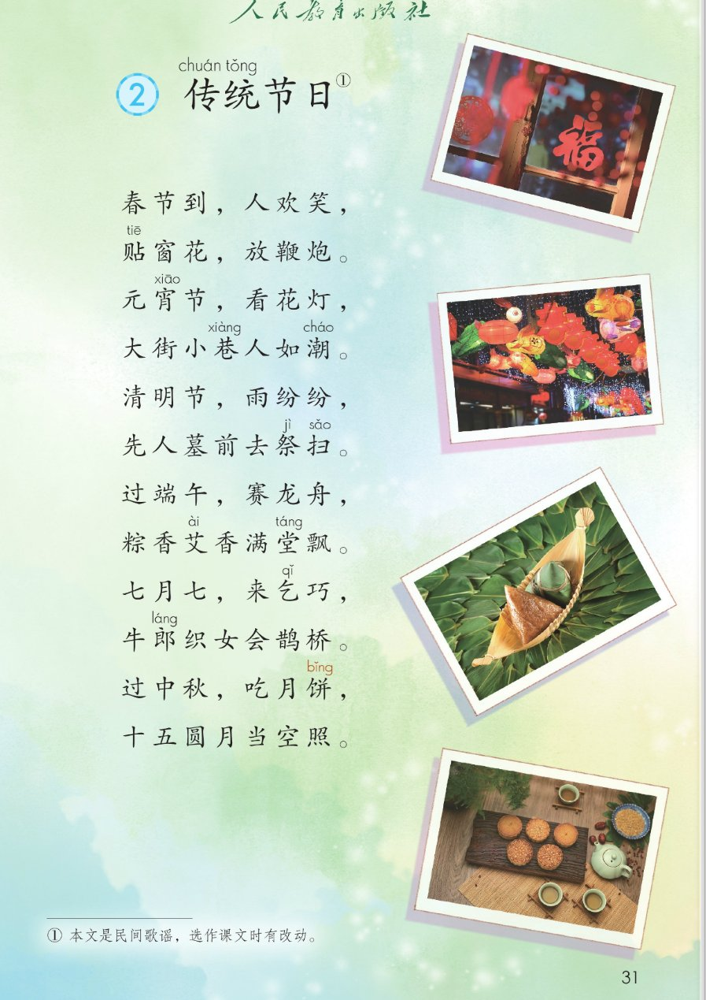
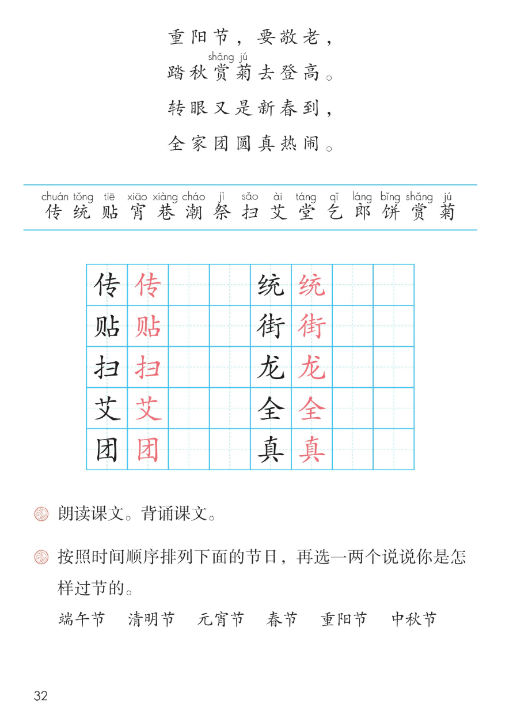

×
🔊 手机听不到声音怎么办？
① 先把手机
媒体音量调大 ，确认没开静音、没连蓝牙耳机；在微信里打开的，点右上角「⋯ → 用浏览器打开」。
② 还是没声音？到应用商店免费下载
Microsoft Edge 浏览器 （它自带朗读发声），用它打开本页面就能出声。
③ 换了 Edge 仍然没声音，说明这部手机的
硬件/系统不支持 网页朗读（多为老旧机型）；近几年买的新手机一般都能正常播放。
→ 打开声音自检
🏮 识字 2《传统节日》· 有声图文带读
语文 · 第三单元·识字 · 课本 第 31~32 页 · 按时间顺序唱节日
课文 8 组 · 16 行
会认字 15
会写字 10
听写词 10
近义词 4 组
深入理解 8 题
本领 节日歌谣
🎧 五步学（可随时点任意一句、一个字、一个词单独听）： ① 听读课文 ——8 组 16 行，一句一句读，读到哪句哪句发光；开「跟读」后读完一句留时间自己读。② 学字词 ——15 个会认字、10 个会写字（含书写提示），点一个读一个。③ 词语·听写·造句 ——读课本第 32 页两道课后题和 6 个节日词，听写 10 个词，再听 4 组近义词辨析。 ④ 深入理解 ——8 道题（认知 / 理解 / 运用 / 拓展），开放题答案不唯一，先想后看。⑤ 诵歌谣·齐读 ——按 5 步记住节日的顺序，再按课后题①朗读、背诵全课。
📚 本册第三单元·识字（照课本第 29、31 页页眉）： 1 神州谣 → 2 传统节日（本课）前后连起来看：识字 1 用三字谣夸祖国 → 识字 2 按时间顺序唱节日，都藏着中国人的生活
📖 课文出处（课本第 31 页照录） ：① 本文是民间歌谣，选作课文时有改动。课题「传统节日」的「传」「统」上方注音，右上角标 ①；注音照课本第 31~32 页
点组前的 ①~⑧ 听整组
🏮 课题 ：② 传chuán 统tǒng 节日
（「传」「统」的注音与右上角 ① 照课本第 31 页）
🔁 跟读模式：关
👁 隐藏注音（自测用）
注音只标本课要认、要写的字和课本明确标了音的字，每字只注一次；会写字里课本未注的「街 / 龙 / 全 / 团 / 真」按字典补注，供参考
🎤 朗读要求 · 朗读并背诵课文（课后题①的老师标准） 读准字音 ：传 chuán 、统 tǒng 、贴 tiē 、宵 xiāo 、巷 xiàng 、潮 cháo 、祭 jì 、扫 sǎo 、艾 ài 、堂 táng 、乞 qǐ 、郎 láng 、饼 bǐng 、赏 shǎng 、菊 jú （照课本第 31~32 页）；读出节奏 ：前十四行三字一顿 ，最后两行七个字一口气读；逗号停得短，句号停得长；不添不漏 ：十六行一个字都不能少；「街 / 龙 / 全 / 团 / 真」是课本未注音的会写字，页面按字典补注，供参考 ；读出感情 ：春节元宵欢快 、清明安静 、七夕中秋轻柔 、敬老诚恳 ；一组一组读 ：读熟了试着按后面的 5 步把整首背下来。
①
春节到，人欢笑，
贴tiē 窗花，放鞭炮。
②
元宵xiāo 节，看花灯，
大街jiē 小巷xiàng 人如潮cháo 。
③
清明节，雨纷纷，
先人墓前去祭jì 扫sǎo 。
④
过端午，赛龙lóng 舟，
粽香艾ài 香满堂táng 飘。
⑤
七月七，来乞qǐ 巧，
牛郎láng 织女会鹊桥。
⑥
过中秋，吃月饼bǐng ，
十五圆月当空照。
⑦
重阳节，要敬老，
踏秋赏shǎng 菊jú 去登高。
⑧
转眼又是新春到，
全quán 家团tuán 圆真zhēn 热闹。
🤔 想一想（点我可跳过）
点一张图，听读整页

第 31 页 · 课题、歌谣前十二行与脚注

第 32 页 · 歌谣后四行、生字表与课后题
📖 人教版《语文》二年级下册 · 课本第 31~32 页 · 图片仅供个人学习，版权归人民教育出版社所有
点一个字，听读音、词语和课文里的句子；照课本第 32 页生字表顺序，全部黑字、没有蓝色多音字
结构、部首、笔画与书写提示为通用规范，供参考，以教材和字典为准
传
chuán
传统 · 传说
6 画 · 左右（亻）
单人旁窄，右边专的竖笔挺直
贴
tiē
贴窗花 · 贴春联
9 画 · 左右（贝）
贝字旁窄长，右边的占稍宽
扫
sǎo
祭扫 · 扫地
6 画 · 左右（扌）
提手旁提笔有力，右边的彐扁平
艾
ài
艾香 · 艾草
5 画 · 上下（艹）
草字头盖住下面，撇捺舒展
团
tuán
团圆 · 团结
6 画 · 全包围（囗）
先写方框的上半，里面写好再封口
统
tǒng
传统 · 统一
9 画 · 左右（纟）
绞丝旁窄，右边的充竖弯钩舒展
街
jiē
大街 · 街道
12 画 · 左中右（行）
中间圭写在正中，两边高低对齐
龙
lóng
龙舟 · 龙灯
5 画 · 独体（龙）
横折撇写稳，最后一笔托住全字
全
quán
全家 · 安全
6 画 · 上下（人）
人字头盖住下面，王的横画均匀
真
zhēn
真热闹 · 认真
10 画 · 上下（目）
横画多间距匀，最后一撇变点
点一行，听题目、句子和词语
📖 课后题（课本第 32 页照录） ：下面 8 行是两道题、6 个节日词照录、排一排供参考与 4 个过节说一说。
课后题 ① 朗读课文。背诵课文。
课后题 ② 按照时间顺序排列下面的节日，再选一两个说说你是怎样过节的。
节日词照录 端午节 清明节 元宵节 春节 重阳节 中秋节
排一排 供参考 春节 → 元宵节 → 清明节 → 端午节 → 中秋节 → 重阳节
说一说 春节 贴窗花、放鞭炮，全家吃团圆饭
说一说 元宵节 看花灯、吃元宵
说一说 端午节 赛龙舟、吃粽子
说一说 中秋节 吃月饼、赏月
读两遍 → 你在纸上写 → 报答案 → 听示范句
准备听写 · 共 10 个词
○ ○ ○
点下面的「开始听写」，听到一个词就写一个词。
▶ 开始听写
🔁 再读一遍
👁 看答案
点词听读，点句子听示范句，再自己说一句
1 传统 会写字 · 传、统
示范句：春节是我国的传统节日。
✏️ 我也能说：说一个节日
2 贴窗花 会写字 · 贴
示范句：春节到，贴窗花，放鞭炮。
✏️ 我也能说：贴什么
3 扫墓 会写字 · 扫
示范句：清明节，人们去扫墓。
✏️ 我也能说：什么时候做什么
4 艾香 会写字 · 艾
示范句：粽香艾香满堂飘。
✏️ 我也能说：什么香
5 团圆 会写字 · 团
示范句：全家团圆真热闹。
✏️ 我也能说：谁团圆
6 大街 会写字 · 街
示范句：大街小巷人如潮。
✏️ 我也能说：哪里怎么样
7 龙舟 会写字 · 龙
示范句：过端午，赛龙舟。
✏️ 我也能说：赛龙舟
8 全家 会写字 · 全
示范句：全家团圆真热闹。
✏️ 我也能说：全家做什么
9 认真 会写字 · 真
示范句：我认真听爷爷讲过节的事。
✏️ 我也能说：认真做什么
10 节日 课文核心词
示范句：我国的传统节日真多呀！
✏️ 我也能说：喜欢的节日
相同点 / 不一样在哪 / 各造一句
欢笑 — 欢乐
相同：都写高兴、开心 。
不一样：欢笑 是课文里的原词，春节到，人欢笑，带着笑声，是又能笑又快乐；欢乐 多说气氛，比如欢乐的歌声、欢乐的海洋。
欢笑：春节到，人欢笑。
热闹 — 喧闹
相同：都写人多、场面热闹 。
不一样：热闹 是课文里的原词，全家团圆真热闹，是高兴的、喜气的闹；喧闹 多写声音大、吵吵嚷嚷，常带一点吵的意思。
热闹：全家团圆真热闹。
敬老 — 尊老
相同：都写尊敬、关心老人 。
不一样：敬老 是课文里的原词，重阳节，要敬老，重阳节也叫敬老节；尊老 意思一样，常说尊老爱幼，敬老和爱护小孩子连在一起说。
敬老：重阳节，要敬老。
登高 — 爬山
相同：都写往高处走 。
不一样：登高 是课文里的原词，踏秋赏菊去登高，重阳节的传统活动，图个步步升高；爬山 是平常说法，什么时候都能去爬。
登高：踏秋赏菊去登高。
节日排队 春节 → 元宵 → 清明 → 端午
两个香字 粽香艾香满堂飘。
人如潮 大街小巷人如潮。
要敬老 重阳节，要敬老，
标「答案不唯一」的题，说得有道理都对
认知 这首节日歌谣一共几组、几行？按时间顺序唱了哪些节日？看解析
🤔 想一想
解析：
八组十六行，每组两行。
春节、元宵、清明、端午、七夕、中秋、重阳。
转眼又是新春到，转回过年。
认知 每个节日各有一件代表性的事，你能对着课文说出两三个吗？看解析
🤔 想一想
解析：
贴窗花，放鞭炮。
赛龙舟，粽子香。
吃月饼；敬老、登高。
理解 「大街小巷人如潮」是什么意思？为什么说人如潮？看解析
🤔 想一想
解析：
大街小巷，大大小小的街道。
把人流比成潮水，多而涌。
人如潮读得饱满有力。
理解 「七月七，来乞巧」里的乞巧是什么？这句背后藏着什么故事？看解析
🤔 想一想
解析：
乞巧，乞求心灵手巧。
牛郎织女鹊桥相会。
轻柔一点，像讲故事。
理解 最后一组「转眼又是新春到，全家团圆真热闹」在整首歌谣里有什么作用？看解析
🤔 想一想
解析：
从春节出发，又回到新春。
开头结尾正好接成一个圆圈。
团圆是节日里最重要的事。
运用 课后题②：把六个节日按时间顺序排一排，再选一个说说你是怎样过节的。看解析
🤔 想一想
解析：
春节到重阳，按先后排好。
和谁、做什么、心情怎样。
贴窗花、赛龙舟、赏月都可以。
🌈 答案不唯一，说得有道理都对
运用 课后题①：朗读并背诵课文。八组怎么背才不乱？照课文的样子再编一组节日歌。看解析
🤔 想一想
解析：
按节日先后一组一组背。
前一行节日，后一行习俗。
三字一顿，节日加习俗。
🌈 答案不唯一，说得有道理都对
拓展 你还知道哪些传统节日或家乡的过节习俗？回家问问长辈，把最有趣的一条记下来。看解析
🤔 想一想
解析：
腊八节、二月二都可以说。
舞龙灯、庙会、做年糕。
他们小时候怎么过节。
🌈 答案不唯一，说得有道理都对
点一步，听这一步
4
然后 · 唱七夕中秋
5
最后 · 唱重阳新春
💬 课后题①照录 ：朗读课文。背诵课文。先 唱过年 → 再 唱元宵清明 → 接着 唱端午 → 然后 唱七夕中秋 → 最后 唱重阳、回到新春团圆。
课后题①：点一张卡，听这一组唱的那两行
🧧 齐读·春节
春节到，人欢笑，贴窗花，放鞭炮。
💬 欢快、喜气，年味出来
🏮 小组·元宵
元宵节，看花灯，大街小巷人如潮。
💬 人如潮，读得饱满
🌧 男女生·清明
清明节，雨纷纷，先人墓前去祭扫。
💬 安静、庄重，慢慢读
🐉 小组·端午
过端午，赛龙舟，粽香艾香满堂飘。
💬 有劲，两个香读出味道
🌌 男女生·七夕
七月七，来乞巧，牛郎织女会鹊桥。
💬 轻柔，像讲传说
🌕 齐读·中秋
过中秋，吃月饼，十五圆月当空照。
💬 舒展、明亮，月亮升起来
🍂 全班·重阳
重阳节，要敬老，踏秋赏菊去登高。
💬 诚恳，敬老读得真挚
🎆 齐读·新春
转眼又是新春到，全家团圆真热闹。
💬 欢腾，收住全课